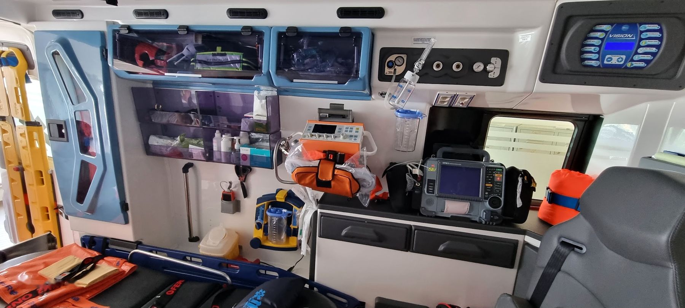

Emergenza pre-ospedaliera e intra-ospedaliera
Allena le decisioni che contano nei primi minuti.
Guidi la squadra su un paziente che evolve in tempo reale: valutazione ABCDE, monitoraggio, manovre, farmaci, trasporto e consegna.
- 5scenari clinici
- 3ruoli: soccorritore, infermiere, medico
- 60+manovre e farmaci
- SBARconsegna e scheda di intervento
Scenari
Come funziona
- ValutaTocchi il paziente ed esegui l’ABCDE. Il monitor mostra solo i sensori che colleghi.
- TrattaOgni manovra occupa un operatore e richiede tempo, mentre il paziente cambia.
- TrasportaScegli l’ospedale giusto, gestisci il viaggio e fai la consegna SBAR.
- RivediDebriefing con azioni critiche, errori, grafico dei parametri e scheda di intervento.
Scarica l’app
Funziona anche senza connessione.
Sei l’istruttore?
Lo studente apre il pannello istruttore durante la simulazione e ti legge il codice di 4 cifre. Da qui vedi i parametri in diretta e comandi gli eventi da un secondo dispositivo.
Strumento a scopo formativo. Dosi e algoritmi seguono le linee guida ERC 2021 in forma semplificata: verifica sempre con i protocolli in vigore nel tuo servizio.